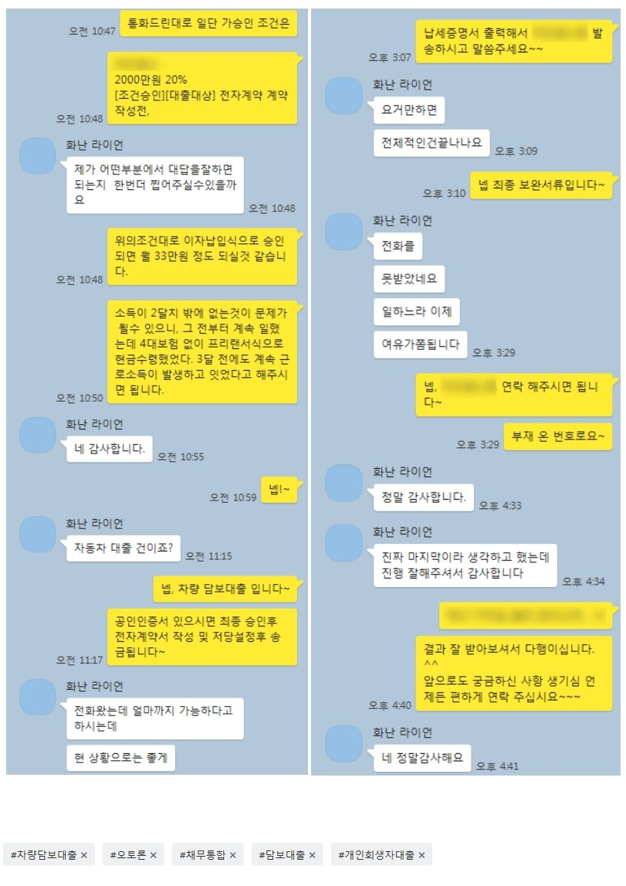

재직기간 2개월 직장인 차량담보 오토론 2000만 진행 사례
안녕하십니까? 뱅크앤론 조영우 이사입니다~
오늘은 재직 및 대부업 사용건 등으로 타사에서 계속 진행이 어려우셨는데, 당사에서 차량담보대출 오토론 진행해 드린 사례 공유 드립니다.
해당 고객님의 대략적인 프로필은 아래와 같습니다.
- 20대 남성
- 개인회생 60회중 58회납
- 직장인, 재직기간 2개월, 급여 2회 수령
- 기대출 : 대부업 3건 사용중
- 2019년식 차량 보유 (가족으로 부터 최근 명의 이전)
개인회생 진행중인 직장인이시지만, 재직기간이 2개월로 짧고 이미 대부 대출을 3건 사용중이셔서 일반 신용대출 진행이 어려우신 상황이셨습니다. 이에 선순위로 차량할부는 남아있지만 최근 가족으로부터 명의이전 받은 차량으로 진행 도와드렸고, 최종 2000만원 승인되어 필요자금 전액 해결이 가능하셨습니다.
아래는 고객님과 나눈 실제 대화 내용입니다. 참고 부탁 드리겠습니다~
